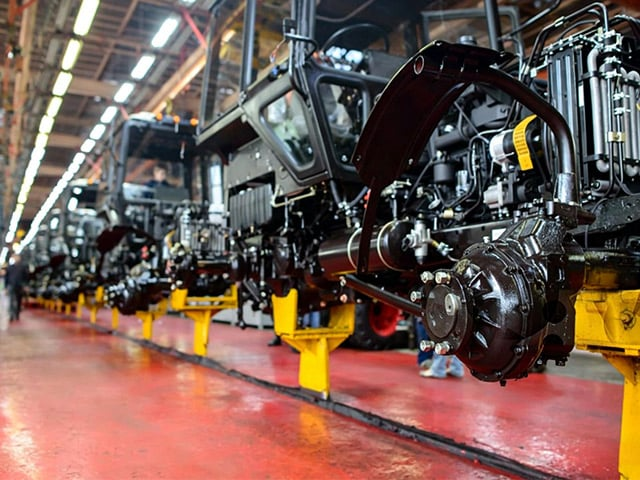

Supporting international buyers in heavy machinery, engine systems, mining equipment, agricultural machinery, and Chinese automotive parts.
We help international buyers identify reliable Chinese manufacturers, align technical specifications, negotiate pricing, and reduce sourcing risks.
We operate independently and represent the interests of buyers.
We analyze key market trends across China’s industrial sectors, including pricing shifts, supply-demand changes, and emerging opportunities. Our insights help buyers understand timing, reduce risks, and make better sourcing decisions in a constantly changing market.
Learn how to identify reliable Chinese suppliers, distinguish factories from trading companies, and evaluate production capabilities. Our insights are based on real experience, helping you reduce sourcing risks and build stable, long-term supplier relationships.
We compare industrial products, materials, and manufacturing standards to reveal real differences behind pricing and quality. Our analysis helps buyers select the right products, balance cost and performance, and avoid costly mistakes.
Understand how pricing works in China, including cost structure, supplier margins, and hidden expenses. We provide practical insights to help you negotiate effectively, control budgets, and achieve better value in your sourcing process.
Explore real sourcing cases showing how we identify suppliers, verify factories, and manage production. These examples demonstrate our working process and the value we deliver in solving complex procurement challenges.
Follow our on-the-ground activities in China, including factory visits, inspections, and supplier meetings. These updates show how we work in practice and ensure transparency throughout the sourcing process.
Overseas buyers can verify a supplier’s identity using public business databases such as Tianyancha or Qichacha, as well as platform tools like 1688’s “88cha” search. Look for the words “manufacturing” or “production” in the business license. A true factory’s registration always shows production-related scope, not just trading or wholesale.
On Alibaba.com, prioritize suppliers with the blue "Verified Supplier" badge, requiring independent third-party audits (SGS, TÜV) of production capabilities. Filter by "Trade Assurance" for payment protection. Check company profiles for "Custom Manufacture" labeling—factories often display this, while "Multi‑specialty Supplier" indicates trading companies. Review factory inspection reports and live production videos. Always cross‑reference business licenses from supplier profiles.

Central China’s Luoyang has 300+ OEM tractor parts makers. East China’s Shandong cluster hosts thousands of suppliers. South China’s Jiangmen produces smart hill‑machinery. North China’s Ningjin and Pangkou areas contain over 1,400 parts factories. West China’s Chongqing and Sichuan focus on micro‑cultivators. These five regions drive China’s US$5.4 billion annual parts export.